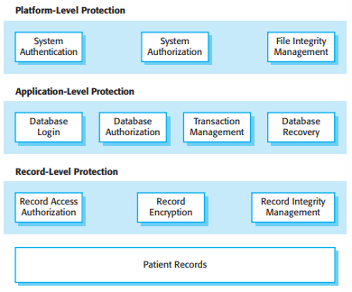
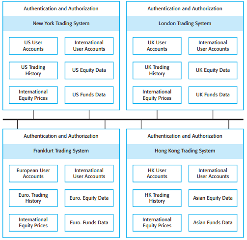

It is generally true that it is very difficult to add security to a system after it has been
implemented. Therefore, you need to take security issues into account during the
systems design process. In this section, I focus primarily on issues of system design,
because this topic isn’t given the attention it deserves in computer security books.
Implementation issues and mistakes also have a major impact on security but these
are often dependent on the specific technology used. I recommend Viega and
McGraw’s book (2002) as a good introduction to programming for security.
Here, I focus on a number of general, application-independent issues relevant to
secure systems design:
- Architectural design—how do architectural design decisions affect the security
of a system?
-
Good practice—what is accepted good practice when designing secure systems?
-
Design for deployment—what support should be designed into systems to avoid
the introduction of vulnerabilities when a system is deployed for use?
Denial of service attacks
Denial of service attacks attempt to bring down a networked system by bombarding it with a huge number of
service requests. These place a load on the system for which it was not designed and they exclude legitimate
requests for system service. Consequently, the system may become unavailable either because it crashes with
the heavy load or has to be taken offline by system managers to stop the flow of requests.
http://www.SoftwareEngineering-9.com/Web/Security/DoS.html
Of course, these are not the only design issues that are important for security. Every
application is different and security design also has to take into account the purpose,
criticality, and operational environment of the application. For example, if you are
designing a military system, you need to adopt their security classification model
(secret, top secret, etc.). If you are designing a system that maintains personal information, you may have to take into account data protection legislation that places
restrictions on how data is managed.
There is a close relationship between dependability and security. The use of
redundancy and diversity, which is fundamental for achieving dependability, may
mean that a system can resist and recover from attacks that target specific design or
implementation characteristics. Mechanisms to support a high level of availability
may help the system to recover from so-called denial of service attacks, where the
aim of an attacker is to bring down the system and stop it working properly.
Designing a system to be secure inevitably involves compromises. It is certainly
possible to design multiple security measures into a system that will reduce the
chances of a successful attack. However, security measures often require a lot of
additional computation and so affect the overall performance of a system. For example, you can reduce the chances of confidential information being disclosed by
encrypting that information. However, this means that users of the information have
to wait for it to be decrypted and this may slow down their work.
There are also tensions between security and usability. Security measures sometimes require the user to remember and provide additional information (e.g., multiple passwords). However, sometimes users forget this information, so the additional
security means that they can’t use the system. Designers therefore have to find a balance between security, performance, and usability. This will depend on the type of
system and where it is being used. For example, in a military system, users are familiar with high-security systems and so are willing to accept and follow processes that
require frequent checks. In a system for stock trading, however, interruptions of
operation for security checks would be completely unacceptable.
14.2.1 Architectural design
________________________________________________________________________________________________
As I have discussed in Chapter 11, the choice of software architecture can have
profound effects on the emergent properties of a system. If an inappropriate
architecture is used, it may be very difficult to maintain the confidentiality and integrity of information in the system or to guarantee a required level of system
availability
In designing a system architecture that maintains security, you need to consider
two fundamental issues:
- Protection—how should the system be organized so that critical assets can be
protected against external attack?
- Distribution—how should system assets be distributed so that the effects of a
successful attack are minimized?
These issues are potentially conflicting. If you put all your assets in one place,
then you can build layers of protection around them. As you only have to build a
single protection system, you may be able to afford a strong system with several
protection layers. However, if that protection fails, then all your assets are compromised. Adding several layers of protection also affects the usability of a system so
it may mean that it is more difficult to meet system usability and performance
requirements.
On the other hand, if you distribute assets, they are more expensive to protect
because protection systems have to be implemented for each copy. Typically, then,
you cannot afford as many protection layers. The chances are greater that the protection will be breached. However, if this happens, you don’t suffer a total loss. It may
be possible to duplicate and distribute information assets so that if one copy is corrupted or inaccessible, then the other copy can be used. However, if the information
is confidential, keeping additional copies increases the risk that an intruder will gain
access to this information.
For the patient record system, it is appropriate to use a centralized database architecture. To provide protection, you use a layered architecture with the critical protected assets at the lowest level in the system, with various layers of protection
around them. Figure 14.4 illustrates this for the patient record system in which the
critical assets to be protected are the records of individual patients.
In order to access and modify patient records, an attacker has to penetrate three
system layers:
- Platform-level protection The top level controls access to the platform on which
the patient record system runs. This usually involves a user signing on to a particular computer. The platform will also normally include support for maintaining the integrity of files on the system, backups, etc
- Application-level protection The next protection level is built into the application itself. It involves a user accessing the application, being authenticated, and
getting authorization to take actions such as viewing or modifying data.
Application-specific integrity management support may be available.
- Record-level protection This level is invoked when access to specific records is
required, and involves checking that a user is authorized to carry out the
requested operations on that record. Protection at this level might also involve

Figure 14.4 A layered protection architecture
encryption to ensure that records cannot be browsed using a file browser.
Integrity checking using, for example, cryptographic checksums, can detect
changes that have been made outside the normal record update mechanisms.
The number of protection layers that you need in any particular application depends
on the criticality of the data. Not all applications need protection at the record level
and, therefore, coarser-grain access control is more commonly used. To achieve
security, you should not allow the same user credentials to be used at each level.
Ideally, if you have a password-based system, then the application password should
be different from both the system password and the record-level password. However,
multiple passwords are difficult for users to remember and they find repeated
requests to authenticate themselves irritating. You often, therefore, have to compromise on security in favor of system usability.
If protection of data is a critical requirement, then a client–server architecture
should be used, with the protection mechanisms built into the server. However, if the
protection is compromised, then the losses associated with an attack are likely to be
high, as are the costs of recovery (e.g., all user credentials may have to be reissued).
The system is vulnerable to denial of service attacks, which overload the server and
make it impossible for anyone to access the system database.
If you think that denial of service attacks are a major risk, you may decide to use
a distributed object architecture for the application. In this situation, illustrated in
Figure 14.5, the system’s assets are distributed across a number of different platforms, with separate protection mechanisms used for each of these. An attack on one
node might mean that some assets are unavailable but it would still be possible to

Figure 14.5 Distributed assets in an equity trading system
provide some system services. Data can be replicated across the nodes in the system
so that recovery from attacks is simplified.
Figure 14.5 shows the architecture of a banking system for trading in stocks and
funds on the New York, London, Frankfurt, and Hong Kong markets. The system is
distributed so that data about each market is maintained separately. Assets required
to support the critical activity of equity trading (user accounts and prices) are replicated and available on all nodes. If a node of the system is attacked and becomes
unavailable, the critical activity of equity trading can be transferred to another country and so can still be available to users.
I have already discussed the problem of finding a balance between security and
system performance. A problem of secure system design is that in many cases, the
architectural style that is most suitable for meeting the security requirements may
not be the best one for meeting the performance requirements. For example, say an application has one absolute requirement to maintain the confidentiality of a large
database and another requirement for very fast access to that data. A high level of
protection suggests that layers of protection are required, which means that there
must be communications between the system layers. This has an inevitable performance overhead, thus will slow down access to the data. If an alternative architecture
is used, then implementing protection and guaranteeing confidentiality may be more
difficult and expensive. In such a situation, you have to discuss the inherent conflicts
with the system client and agree on how these are to be resolved.
14.2.2 Design Guidelines
________________________________________________________________________________________________
There are no hard and fast rules about how to achieve system security. Different
types of systems require different technical measures to achieve a level of security
that is acceptable to the system owner. The attitudes and requirements of different
groups of users profoundly affect what is and is not acceptable. For example, in a
bank, users are likely to accept a higher level of security, and hence more intrusive
security procedures than, say, in a university.
However, there are general guidelines that have wide applicability when designing system security solutions, which encapsulate good design practice for secure
systems engineering. General design guidelines for security, such as those discussed,
below, have two principal uses:
- They help raise awareness of security issues in a software engineering team.
Software engineers often focus on the short-term goal of getting the software
working and delivered to customers. It is easy for them to overlook security
issues. Knowledge of these guidelines can mean that security issues are considered when software design decisions are made.
- They can be used as a review checklist that can be used in the system validation
process. From the high-level guidelines discussed here, more specific questions
can be derived that explore how security has been engineered into a system